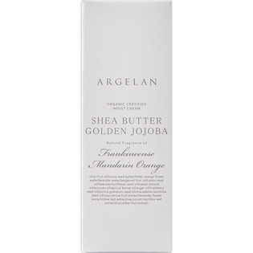

返回列表
产品名称：アルジェラン モイストクリーム

カラーズ アルジェラン モイストクリーム ５０ｇ
メーカー カラーズ
JANコード 4571242812509
商品の特徴
ステアリン酸高含有の生カカオバターの濃厚クリーム
- 成分・分量
- 水・オリーブ果実油＊・ホホバ種子油＊・グリセリン・ビターオレンジ花水＊・シア脂＊・ステアリン酸グリセリル・ダイマージリノール酸ダイマージリノレイル・セテアリルアルコール・カカオ脂＊・ベヘニルアルコール・ラベンダー水＊・ニュウコウジュ油・マンダリンオレンジ果皮油＊・ベルガモット果皮油・ヒマシ油＊・ミツロウ・ヒマワリ種子油・グリコシルトレハロース・アーモンド油＊・加水分解水添デンプン・アボカド油＊・トコフェロール・アンズ核油＊・アルガニアスピノサ核油＊・キサンタンガム・クランベリー種子油＊・ザクロ種子油＊・マカデミアナッツ油＊・ステアロイル乳酸Na・カニナバラ果実エキス＊・ラベンダー花エキス＊・ベンジルアルコール・オリーブ葉エキス＊・エタノール・ビルベリー葉エキス＊・デヒドロ酢酸・キュウリ果実エキス＊ ＊オーガニック原料
- 用法及び用量
- ＜使用方法＞
適量（1円玉サイズ大）を手にとり、ひと肌で温めながら乾燥が気になる部分を中心にやさしくなじませてください。